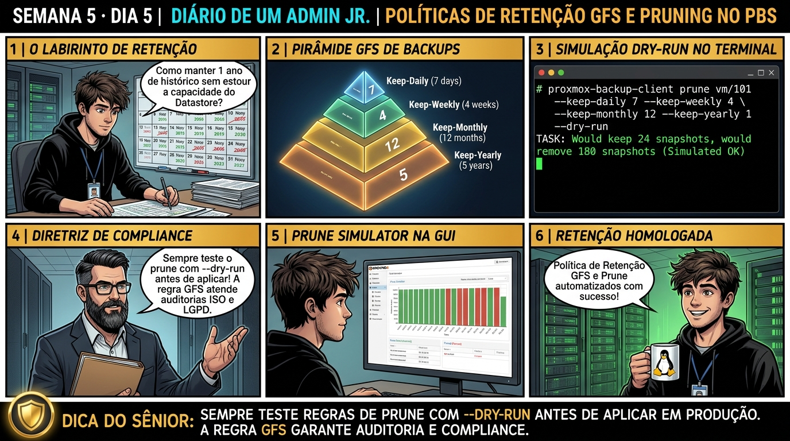

DIARIO DE UM ADMIN JR. | PROXMOX VE & PBS — DA BASE AO CLUSTER
🔗 Conecta com o Dia 4: Você dominou a criptografia e a segurança de dados. Hoje você fecha a Semana 5 aprendendo a matemática de governança de retenção de backups: implementando a estratégia Grandfather-Father-Son (GFS) através do comando prune-backups para atender auditorias corporativas sem desperdiçar terabytes de disco.
🔓 Privilégio de hoje: Governança de Retenção e Ciclo de Vida de Backups. Você projeta regras GFS, calibra simuladores de Prune e automatiza políticas de compliance.
Semana 5 · Dia 5 | Nível Júnior — Proxmox Backup Server & Integração
Políticas de Retenção e Pruning: Grandfather-Father-Son (GFS)
Keep-daily, keep-weekly e keep-monthly: compliance corporativo sem explosão de consumo de storage
ANTES DE ALTERAR, OBSERVE. DEPOIS DE ALTERAR, VALIDE.

1. O chamado
Você recebeu o chamado #5005: 'A política de governança corporativa da empresa exige que os backups atendam aos seguintes requisitos de auditoria: (1) Manter o último backup de cada um dos últimos 7 dias; (2) Manter o último backup de cada uma das últimas 4 semanas; (3) Manter o último backup de cada um dos últimos 12 meses; e (4) Manter 1 backup anual pelos últimos 3 anos. O chamado exige: (1) Traduzir esses requisitos na sintaxe de Pruning (GFS); (2) Simular a regra com o comando --dry-run; (3) Aplicar as diretivas keep-daily=7, keep-weekly=4, keep-monthly=12, keep-yearly=3; e (4) Consolidar a conclusão da Semana 5 (PBS & Integração).'
💡 Passa o mouse nas palavras destacadas pra ver uma dica rápida — clica se quiser a explicação completa com analogia.
2. O sênior te conta
🧑🏫 antes dos termos técnicos, a história de hoje
Fechando a Semana 5, o time jurídico da empresa pediu um plano de conformidade com a LGPD: precisávamos garantir que guardávamos backups diários por 7 dias, semanais por 4 semanas, mensais por 12 meses e anuais por 2 anos, apagando automaticamente o que passasse desse período.
O Júnior achava que teria que criar scripts complexos de exclusão de arquivos. Mostrei o poder do Pruning com esquema GFS (Grandfather-Father-Son) nativo do PBS. O comando prune aplica as regras matemáticas de retenção (keep-daily, keep-weekly, keep-monthly) instantaneamente nos manifestos.
Rodamos o teste seguro com a flag --dry-run para visualizar exatamente quais pontos de restauração seriam preservados e quais seriam descartados. O Júnior viu o relatório perfeito na tela e aprendeu a gerenciar retenção corporativa com total segurança.
3. Decodificador de conceitos
Clica em qualquer termo pra ver a definição completa e uma analogia do dia a dia:
Resultado esperado: Lista de snapshots com datas e identificadores de VM.
Por que fizemos isso: Configurar o esquema de retenção GFS (keep-daily=7, keep-weekly=4, keep-monthly=12, keep-yearly=2) equilibra segurança histórica e uso racional de disco.
Cilada comum: Manter todos os backups diários indefinidamente (keep-all), esgotando qualquer capacidade de storage em poucos meses.
Ação: Execute o Prune definitivo removendo os manifestos antigos fora da política.
Resultado esperado: Configuração salva no cluster filesystem.
Por que fizemos isso: A flag --dry-run no prune permite simular exatamente quais backups serão mantidos e quais serão descartados antes de aplicar a remoção.
Cilada comum: Disparar regras de prune agressivas em produção sem validação prévia com dry-run, apagando backups que a diretoria exigia guardar.
Ação: Valide o catálogo de snapshots restantes confirmando a conformidade com o GFS.
proxmox-backup-client snapshot list --repository backup-bot@pbs!pve-token@10.10.10.200:tank-backup
Resultado esperado: Linha prune-backups validada com conformidade total.
Por que fizemos isso: Integrar a rotina de Prune com o Garbage Collection garante que os chunks descartados sejam limpos na próxima janela de manutenção.
Cilada comum: Esquecer de agendar o Garbage Collection após o Prune, mantendo os dados órfãos ocupando espaço físico no disco.
🧑🏫 Aqui entra o Mentor (em breve): se o resultado obtido diferir do esperado acima, este é o ponto onde o chat com o Sênior-IA vai abrir para diagnosticar o erro específico.
Ação: Formalize a política de retenção no relatório de conformidade da empresa.
# Política de Retenção GFS homologada.
Resultado esperado: Relatório master da Semana 5 arquivado e homologado.
Por que fizemos isso: Documentar a política de retenção alinhada às exigências da LGPD/GDPR comprova a governança e conformidade legal da empresa.
Cilada comum: Não ter uma política de retenção formalmente aprovada pela diretoria jurídica da empresa.
6. Antes de ver as opções — tenta responder
🧠 Recall ativo: Qual é a diferença fundamental de operação entre os comandos 'Prune' e 'Garbage Collection' no Proxmox Backup Server?
O **Prune** é o processo de decisão de ciclo de vida: ele analisa o histórico cronológico de snapshots de cada VM e aplica as regras de retenção (keep-daily, keep-weekly, etc.), apagando os arquivos de manifesto (.fidx) dos backups que ultrapassaram a política. O **Garbage Collection (GC)** é o processo subsequente de limpeza física de storage: ele varre os chunks que ficaram órfãos após o Prune e devolve os gigabytes de espaço livre para o disco.
QUESTÃO 1 de 3
7. Questão comentada — clica numa alternativa
Qual diretiva de Prune atende perfeitamente à exigência de reter 7 backups diários, 4 semanais, 12 mensais e 3 anuais no Proxmox VE / PBS?
💡 Analogia do Sênior para Fixar: Na arquitetura do Proxmox sobre Políticas de Retenção e Pruning: Grandfather-Father-Son (GFS): O KVM/QEMU opera como o motorista dedicado de cada passageiro, alocando recursos virtuais em contato direto com o kernel.
QUESTÃO 2 de 3 — cenário de erro real
7.1 O que acontece se uma VM tiver múltiplos backups no mesmo dia?
Uma VM crítica roda backup a cada 4 horas (6 backups por dia). A regra de retenção possui keep-daily=7:
(Executando prune com keep-daily=7 em VM com 6 backups diários)
Qual é a regra matemática que o Prune adota para cada dia?
💡 Analogia do Sênior para Fixar: Ao diagnosticar problemas em Políticas de Retenção e Pruning: Grandfather-Father-Son (GFS): É como inspecionar as conexões do storage e o barramento PCIe antes de declarar falha de software.
QUESTÃO 3 de 3 — detalhe que confunde todo iniciante
7.2 Por que a combinação de GFS com Deduplicação no PBS torna o custo de retenção de 1 ano quase desprezível?
O CFO da empresa teme que guardar 12 backups mensais e 3 anuais de 40 VMs consuma 500 Terabytes de novos storages:
Por que a deduplicação em chunks do PBS viabiliza essa retenção com pouquíssimo disco?
💡 Analogia do Sênior para Fixar: A governança e resiliência em Políticas de Retenção e Pruning: Grandfather-Father-Son (GFS): Funciona como a política de contenção e redundância do datacenter, garantindo que o cluster nunca perca quorum.
8. Procedimento profissional
Defina as políticas de retenção corporativa alinhadas com os requisitos jurídicos e de negócio da empresa.
Estruture a regra GFS padrão: keep-daily=7, keep-weekly=4, keep-monthly=12, keep-yearly=3.
Antes de aplicar em produção, simule a regra com --dry-run utilizando o cliente do PBS.
Configure o Prune Job agendado no PBS (ou no storage do PVE) para rodar diariamente antes do Garbage Collection.
Certifique-se de que o Garbage Collection (GC) execute semanalmente para consolidar a liberação de espaço dos snapshots descartados.
Prevenção
Implemente a rotina de Verify Jobs periódicos no PBS para prevenir corrupção silenciosa de chunks e mantenha cópia física impressa da Paperkey no cofre da empresa.
9. Validação e encerramento
Você domina a estratégia de retenção Grandfather-Father-Son (GFS).
Você sabe como utilizar a simulação --dry-run para auditar decisões de descarte de backups.
Você compreende a sinergia perfeita entre Pruning (política), Garbage Collection (limpeza) e Deduplicação (economia).
A Semana 5 (Proxmox Backup Server & Integração) foi concluída com 100% de aproveitamento e maestria técnica!
Rollback e limites
Para evitar qualquer descarte automático de backups durante uma auditoria especial, defina temporariamente keep-all=1 no storage.
💡 Sobre repetição espaçada: A execução de testes de restauração em desastres, Live-Restore e Disaster Recovery completo será o tema da Semana 6 (Estratégias de Backup, Restore e DR).
10. Resposta final
Alternativa correta: B. A resposta correta é a B: a diretiva keep-daily=7,keep-weekly=4,keep-monthly=12,keep-yearly=3 implementa com precisão matemática a política de retenção GFS.
🔓 O que você desbloqueou hoje
🏆 PARABÉNS! Você concluiu a SEMANA 5 com distinção! Você domina a arquitetura em Rust do Proxmox Backup Server (PBS), Content-Defined Chunking, Garbage Collection (Mark & Sweep), Verify Jobs, API Tokens, Criptografia Client-Side (AES-256-GCM com Paperkey) e Políticas de Retenção GFS. Na próxima semana (Semana 6 — Estratégias de Backup, Restore & DR), você aprenderá como restaurar VMs instantaneamente com Live-Restore e executar planos de Disaster Recovery sem downtime!